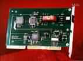
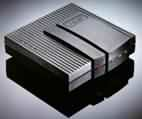
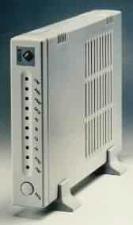

|
|
| 当前位置：电脑报电子版 > 1999 年 > 40 期 > 硬件周刊 > 另眼相看ISDN适配器 |
| 《 另眼相看ISDN适配器 》 |
| ISDN（Integrated Service Digital Network 综合业务数字网）以模拟通信线路无可比拟的优越性得到了广大用户的认同，在电信局的大力推广下，已经显露出了其广阔的发展前景。ISDN的产品很多，主要有ISDN NT1、ISDN数字电话、ISDN适配器、ISDN路由器等等。随着国内ISDN的推广，国外众多ISDN生产商也都涌入中国市场。国内的不少硬件厂商针对ISDN的发展前景，也相继开发出自己的产品，一时间ISDN产品特别是ISDN适配器品牌较多，良莠不齐。不少想选购ISDN适配器的人，对着满柜台的不同ISDN适配器，听着经销商不同的介绍和推荐，看着不同的标价而不知所措，为此，笔者针对要选购主流ISDN适配器的普通用户做一些介绍。
一、ISDN适配器的类型 1．内置ISDN适配器。与Modem一样，ISDN适配器也有内置和外置两种。内置的ISDN适配器也称为ISDN PC卡、ISDN适配卡，根据ISA或PCI接口的不同，又分为带语音接口和不带语音接口两类，少数的ISDN适配卡还带有模拟口用于连接普通的模拟电话。它主要是通过主板上的ISA或PCI接口与计算机相连。ISDN适配卡最大的优点是速度比较稳定，不会受到串口速度的影响。但内置的ISDN也有致命的缺点，就是大部分产品不带模拟口，没有语音功能，无法实现真正意义上的“一线通”，充分发挥ISDN优越性。此外，ISDN适配卡的安装较麻烦，兼容性也不太好。2．外置ISDN适配器。外置ISDN适配器也称ISDN TA，它像普通的外置Modem一样通过并口或串口与计算机连接，优点是电话功能很强，具有两个模拟接口，可以接两部普通模拟电话。有的外置ISDN适配器还有主叫号显示、被叫号显示、子地址呼叫转移等功能，简直可以当作一部小型交换机，而且一般TA都支持即插即用。由于通过并口或串口与计算机连接，它不会引起中断、地址冲突，也不受超频的影响。但缺点也比较明显，由于大多数TA是通过串口与计算机相连接的，串口的数据传输速率取决于UART芯片。现在几乎所有的计算机都带16550 UART，它的最大数据吞吐率是115Kbps，而ISDN绑定两个B信道的最大数据吞吐率是128Kbps，所以串口的最大数据吞吐率成为了传输的瓶颈。为此，要充分发挥外置TA的速度只能升级串口了。另外TA也具有外置Modem相似的缺点，例如价格较贵、需要外接电源、占用空间等等。 至于究竟是选择外置还是内置的适配器，笔者认为要根据实际情况而考虑。如果你主要为了通过ISDN实现话音或非话音的多种综合通信业务，那么你一定要选择外置的ISDN适配器；如果你只是想通过ISDN提高上网的速度，那么价廉物美的内置ISDN适配卡就是最佳选择。 二、ISDN适配器的选购要点 1．Muliti－PPP协议支持。目前ISDN线路主要分为基本速率接口（BRI）线路和基群速率接口（PRI）线路两种类型，基本速率接口（BRI）线路由2个B信道和一个D信道组成，每个B信道都能以64Kbps的传输率，传输1路数字化话音或1路数据，所以ISDN可以使用Muliti－PPP绑定两个B信道达到128Kbps（D信道在中国地区目前尚未支持）。市场上大多数的ISDN适配器都支持Muliti－PPP，但也有少数早期的产品不支持，这些适配器最高速率往往只能达到64Kbps。所以大家选购的时候一定要注意。2．全面的电话功能支持。ISDN适配器除了用于非话音的数据交换之外，还应具有电话、传真等功能，所以在选购中一定要留意到ISDN适配器支持模拟电话的情况。比如有几个模拟接口、模拟电话之间是否能内部通话，以及是否支持主叫号显示、被叫号显示、子地址呼叫转移、三方业务等ISDN的语音补充业务功能。毕竟如果将普通电话线改装为ISDN线路后，原来的模拟电话机一般要通过ISDN适配器才能使用，因此ISDN适配器的电话功能不容忽视。 3．Configuration Tools（配置工具）支持。由于ISDN适配器比Modem更复杂，所以许多功能（比如64Kbps至128Kbps的切换、来电自动应答等功能）需要用AT指令集来对其进行设置。为此一般ISDN适配器都带有自己的Configuration Tools来代替AT指令来完成这些设置，但每种ISDN的Configuration Tools是互不兼容的，所以这些工具功能的完善性和易用性也是选购ISDN时要注意的。事实上有不少ISDN适配器根本不带Configuration Tools，对于这种ISDN适配器除非你精通或者热衷于学习AT指令集，否则不宜选购。 4．Bandwidth－On－Demand（按需分配带宽或带宽请求）功能支持。Bandwidth－On－Demand也就是可以根据网络需求自动增加或断开一个B信道。当用户在阅读下载的主页或进行少量数据交换时，它自动断开第二个B信道，当用户要使用最大带宽，如下载一个较大的文件，它又能自动将第二个B信道连上。是否支持呼叫碰撞（目前不少电信局未开通此业务，因此笔者现在无法测试该项性能），就是当两个B信道都被使用时，外来语音电话，它会自动释放一个B信道来收听来电。这个功能既能使你享受最大的带宽，又不妨碍接听外电，更节约了费用。 5．即插即用和Windows NT支持。以上的ISDN适配器主要是指外置的，也就是ISDN TA。至于内置的ISDN PC卡，基本上都不带语音功能，一些基本的设置也通过Windows附带的公用程序来完成，所以也就不存在上述的问题。但无论是外置的ISDN TA还是内置的ISDN卡，是否支持即插即用，是否支持NT也是要考虑的问题。虽然即插即用已经成为标准，但有相当一部分ISDN不支持，因此安装特别麻烦。而且一些ISDN特别是内置的ISDN卡不带NT的驱动程序，所以选购ISDN时最好先问问销售商，特别是使用NT的用户一定要问清楚。 6．CAPI标准支持。ISDN适配器的设计规范只是一种廉价的远程数字网络接口，作为DDN业务的补充，所以主要考虑是和互联网的连接，没有考虑到和普通Modem或普通传真机互连。ISDN适配器只能靠软件（例如：RVS－COM）来模拟Modem的一些功能。但要使用这些软件往往需要支持CAPI标准的ISDN界面，CAPI是一种ISDN标准界面，是为方便ISDN软件开发而制定的一种标准接口。如果你想通过ISDN与Modem互连，或通过ISDN收发传真。购买一款支持CAPI标准的ISDN就十分必要了。 7．良好的稳定性。由于ISDN的特殊性，使外置适配器不局限于电脑配件的范畴，一般即使电脑关了，为了ISDN线路上的模拟电话畅通，外置适配器必须是要独立开着的，工作时间远大于普通Modem和电脑。所以它的稳定性也十分重要，而且外置适配器带有很多附加功能，使用得当能充分发挥ISDN的特性和功能，会给你的生活和上网带来方便。 三、主流ISDN适配器评述 TELES。德国名牌，它是最早进入ISDN市场的老产品，兼容性极好。采用并口连接，性能优良，工艺精湛，有两个模拟口。支持会议电话、呼叫保持与转接、呼叫转移、拾音、快速拨号、直接拨号等功能。现在新版本的驱动程序还附带有RVS－COM中文版软件，虽然状态指示灯少了些但是整体性价比很高。3COM。全球知名品牌，采用串口连接，具有3COM的网络产品的一贯的外形，具有两个模拟电话口，有B1/B2信道使用状况指示灯，采用IETF标准的数据压缩技术可充分利用串口资源，两2个B信道上网时支持动态分配带宽。同时提供图形化界面，安装设置都很简单，但价格较贵。 E－TECH。台湾产品，采用串口连接，面板指示灯有10个之多，支持同步和专线，提供两个模拟电话口，有30个电话记忆功能，可以直立放置。支持以BOIS升级，128K上网时支持动态分配带宽，只是设置比较复杂，需要用AT指令。 EICOM。EICOM秉承欧洲产品一贯的精工细作，外观稳重大方带有多个指示灯，支持Muliti－PPP和多种数据压缩标准。它的最大特点提供三个配置脚本和支持多种操作系统，适用于多种环境中迅速完成通信。它的主要定位是企业远程办公者和SOHO，所以稳定性较好。 ASUS。华硕的外置串口ISDN适配器，外观像一个Modem，安装简单。它的驱动程序非常不错，而且更新速度较快。适配器上只有一个模拟口，但是在包装中提供一分二的分线器。另外华硕的保修和服务都很好，价格相对较低。 此外还有宇硕、ACER、华为等品牌的ISDN适配器可供选择，上网浏览的数据传输率和使用效果相差不太大，只是各自的附加功能有所不同，还有支持除标准的ISDN互连外的其他协议的多少，如V110、V120、X75等协议（有的软件要用到ISDN适配器的附加功能时才可以派上大用处的）。但由于支持各种附加协议会导致硬件成本增加，有些厂家就省略部分功能。 由于ISDN的速度优势，在Cable Modem没有普及前，还是有很大的发展前途。就算是电信发达的美国也有一百万ISDN用户。国内几个大城市如北京，上海，广州等均有不少网民加入了ISDN用户的行列，还有不少待装户。不久的将来ISDN就能进入普通用户的家庭，同时带动国内厂家生产ISDN产品，随着市场竞争更加激烈，ISDN适配器的价格会有进一步的调整，真正成为大众化的通讯设备。 （百腾工作室 杨 法） |
| 下载本期推荐软件 | 页 首 |
| 《电脑报》版权所有，电脑报网站编辑部设计制作发布 |